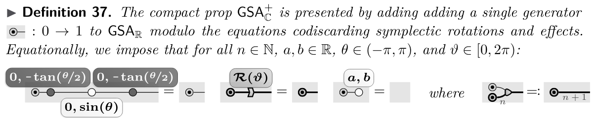

I am a postdoc working for Inria in the QUACS group in Saclay, France. I successfully defended my thesis at the University of Oxford in October 2023.
I am mainly interested in the abstract mathematical theory of quantum mechanics, mathematical logic and theoretical computer science. I am interested in using techniques from monoidal and higher category theory and symplectic geometry to study the abstract compositional structure of abstract and physical processes.
Here is a copy of my CV, updated December 2025.
I have lots of ideas, and am open to new ideas, so please feel free to contact me if any of my research interests you.
You can also find me a the ZX-calculus seminar, and the category theory zulip channel.
firstnamedotlastname(at)inria.fr
Université Paris-Saclay, CNRS, ENS Paris-Saclay, Inria,
Laboratoire Méthodes Formelles
91190, Gif-sur-Yvette, France
Diagrams
- Complete equational theories for classical and quantum Gaussian relations R I Booth, T Carette, C Comfort
CV teleportation:
Equations for vacuum state:

Representation of Gaussian states:

Map of Gaussian relations:
- Graphical Symplectic Algebra R I Booth, T Carette, C Comfort
Scalable spiders:

Normal form:

- Sheet diagrams for bimonoidal categories C Comfort, A Delpeuch, J Hedges
Normalization:
- A Graphical Calculus for Lagrangian Relations C Comfort, A Kissinger

- The ZX&-calculus: A complete graphical calculus for classical circuits using spiders C Comfort

- Coend optics for quantum combs C Comfort, J Hefford
- Dagger linear logic for categorical quantum mechanics JRB Cockett, C Comfort, P Srinivasan
- The category TOF JRB Cockett, C Comfort
- The category CNOT JRB Cockett, C Comfort, P Srinivasan